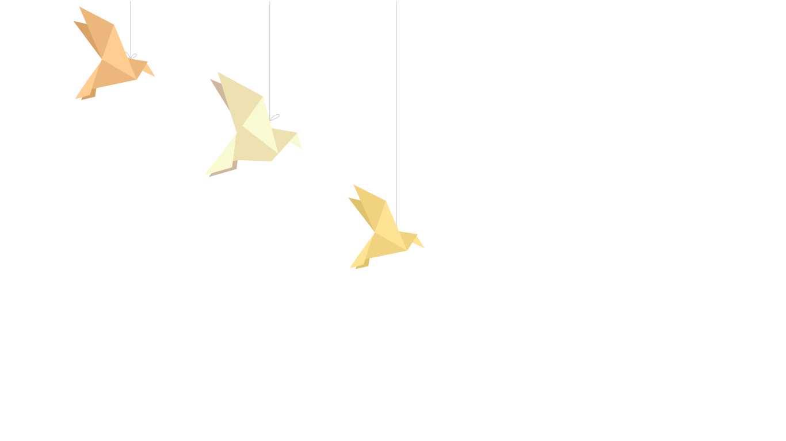
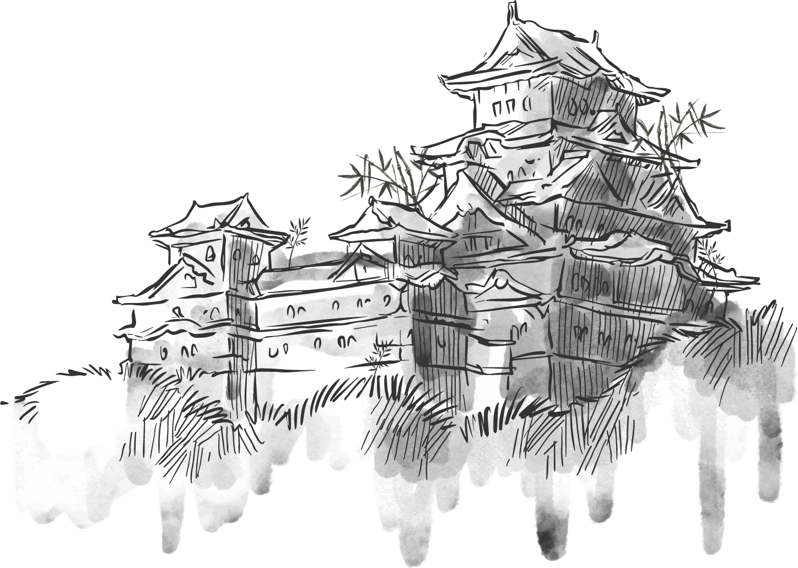

EL RESTAURANTE


Yakitoro es un espacio inspirado en la tradicional taberna japonesa de yakitori. Le damos el toque español y lo interpretamos a nuestra manera, para que todo sea muy cercano y muy nuestro.
Yakitoro evoca la combinación del nombre japonés "yakitori" (焼き鳥), que define a la brocheta japonesa, y de la palabra "toro", el animal y símbolo español más reconocido.

EL CHEF
Alberto Chicote
Comenzó sus estudios de Cocina con 17 años, compaginando
sus estudios con prácticas en algunos de los mejores restaurantes de la ciudad.
Al terminar sus estudios se marchó un año a Suiza a aprender
con los grandes de la cocina centroeuropea para volver a España y finalmente fundar
Nodo,
local pionero en la
cocina de fusión.
Actualmente dirige Yakitoro, situado en el centro de Madrid.
2005 Premio de Madrid Fusión al Mejor Cocinero del año.
2006 Premio Amer al Mejor Cocinero del año.
2009 Premio de El Mundo al Mejor Cocinero en progresión.
2010 Premio de El Mundo al Mejor Restaurante (PandeLujo).
ESPECIALIDADES
Yakitoro nace de un viaje a Japón, del que volvimos convencidos de que la tradicional taberna japonesa de yakitori podía adaptarse a la cocina española. El reto era hacer recetas españolas en clave yakitori. En definitiva, una forma de comer de tapas con todo bien ensartado, aromas a brasas y sabores nuestros. Yakitoro es el nombre que damos a nuestra brocheta. Nuestra carta se basa en Yakitoros que combinan diferentes ingredientes. Encontrarás Yakitoros De La Tierra, Del Agua, De la Granja, De la Finca, Yakibokatas, Yakiramen o ensaladas de la huerta.

TERNERA A LA PLANCHA
Ternera ibérica a la plancha,
acompañada con guarnición de
soja frita y wasabi.

PINCHO TERIYAKI
Diferentes verduras y carnes
cocinadas al estilo teriyaki.

POLLO AL WOK
Brocheta de pollo acompañada de
distintas salsas españolas y
japonesas.

ATÚN VIRULÉ
Atún al vapor acompañado de
patatas guisadas al ajillo.
SOLICITA INFORMACIÓN PARA RESERVAR

 C/ Reina, 41
C/ Reina, 41 28004 Madrid
 +34 91 737 14 41
+34 91 737 14 41  info@yakitoro.com
info@yakitoro.com